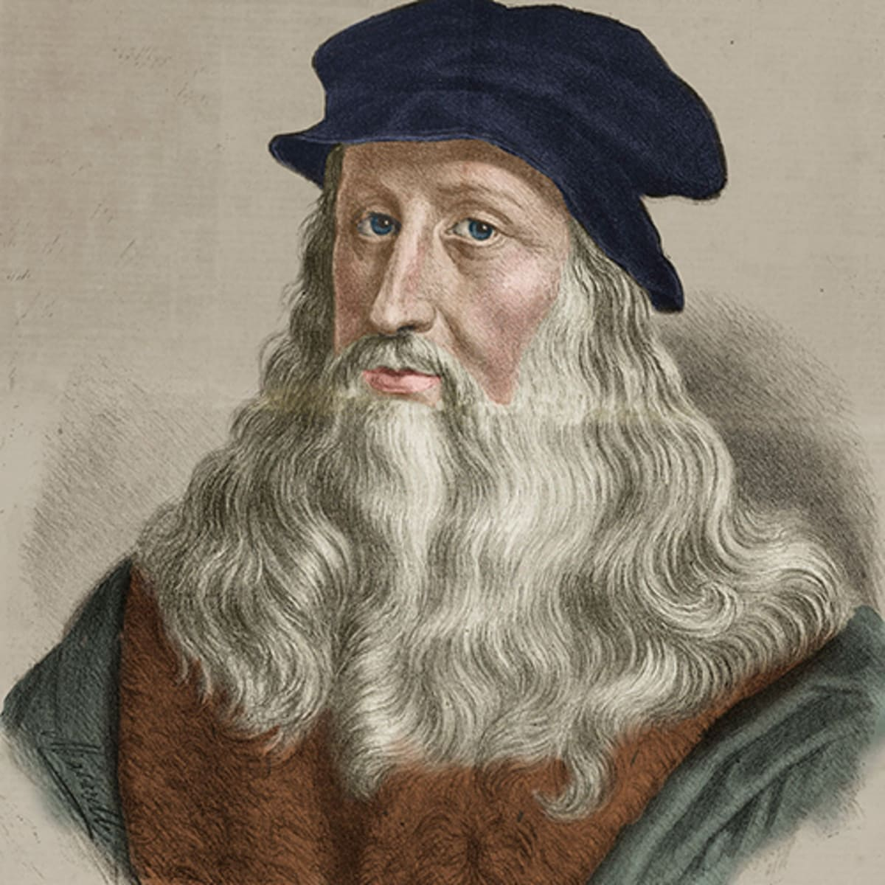

The Renaissance
An unforgettable period of transformation
What is the Renaissance?
The Renaissance was a period of European cultural‚ economic‚ political and artist “rebirth”. Taking place from the 14th to 17th century‚ the Renaissance
fueled the rediscovery of classical philosophy‚ literature and art. Credited with bridging the gap between the Middle Ages and Modern-Day Civilization‚ the Renaissance
is an undeniably important and captivating time in history.
Humanism

Although the essence of the Renaissance was manifested through various forms‚ one of the first was Humanism. Humanism was a cultural movement that first appeared near the
beginning of the Renaissance. Humanism was put into action by secular men of letters rather than by the scholar-clerics who had taken over intellectual life during the Medieval times
and created the Scholastic philosophy. Humanism was first established and initiated in Italy‚ and predecessors of the movement include men like Dante and Pretrarch‚ while
its chief protagonists included Giannozzo Manetti‚ Leonardo Bruni‚ Marsilio Ficino‚ Giovanni Pico della Mirandola‚ Lorenzo Valla‚ and Coluccio Salutati. Now‚ let’s look at what
humanism actually is. Humanism had several features‚ one of which being that it took human nature in all its various manifestations and achievements as its subject. The
second one was that it put emphasis on the unity and truth found in philosophical and theological schools and systems (a belief called syncretism). Lastly‚ it looked forward to a rebirth
in human spirit and wisdom. To summarize‚ the desired effect of humanism was to help men break free from restrictions imposed by religious orthodoxies‚ to inspire free inquiry
and critique‚ and to put more confidence into the possibilities of human thoughts and creations. Humanism and the Renaissance it enveloped spread North from Italy to all parts of Europe‚
through the invention of printing‚ which allowed availability to classical texts increase tenfold. However‚ by the end of the 16th century‚ the battle of Reformation
and Counter-Reformation had taken over majority of Europe‚ while intellectual life was put on the brink of Enlightenment.
The Medeci Family
The Renaissance began in Florence‚ Italy‚ a place with rich cultural history‚ and wealthy citizens were able to help flourishing artists. One particularly notable family was the
Medici Family. The Medici Family ruled Florence for 60 years‚ and were great backers of the Renaissance movement. They were praised by great Italian writers‚ artists and politicians for participating in
an intellectual and artistic revolution which would be much different than what they experienced during the Dark Ages. The movement first spread to to other Italian city-states‚ including Venice‚
Milan‚ Bologna‚ Ferreira and Rome. Then‚ during the 15th century‚ Renaissance ideas spread from Italy to France and then throughout Western and Northern Europe. Although other European countries
experienced their Renaissance later than Italy‚ the impacts were still revolutionary and undoubtedly fueled by the powerful Medici family who assisted in the expansion of the movement from the very beginning.
Advancements Made During the Renaissance
As foreshadowed earlier‚ many scientific‚ architectural and artistic advancements were made during the Renaissance. Here‚ we’ll be discussing a few significant ones. Before we list advancements
made in different fields‚ it’s important to note that science‚ art and architecture were very closely related during the Renaissance. All three fields went hand-in-hand with one another‚ and discoveries
in each were linked to work done in the other.
- Art
Through increased scientific research and discovery‚ artists such as Leonardo Da Vinci were able to incorporate human anatomy into their artwork‚ to replicate and assist scientists with their research.
Art was closely intertwined with science through creating visual models of discoveries that scientists had made surrounding astronomy and anatomy. It’s also important to note that art and artistic perspectives
became generally more accepted and sought-after during the Renaissance‚ which is an achievement in itself. Renaissance art was characterized by naturalism and realism. It aimed to portray objects and people as realistically
as possible‚ which intertwined with research scientists were conducting at the time.
- Architecture
-
Along with art‚ advancements in the architectural realm were equally as revolutionary. Famous architects such as Filippo Brunelleschi studied mathematics to design impressive and at the time‚ unprecedented
buildings‚ such as buildings shaped as domes. Artistic and visual models of buildings also played a fundamental role in the advancement of architecture as it gave architects a visual base to build off‚ rather
than only mathematics.
- Science

Many revolutionary scientific ideas were proposed during the Renaissance‚ however two of the most notable would be in the fields of astronomy and anatomy. In terms of astronomy‚ Nicolaus Copernicus proposed a theory stating that
Sun was the center of the solar system instead of the Earth‚ which was the widely accepted theory until that point. Biology was also another field that faced great advancements during the Renaissance. Human anatomy became more well
studied during the Renaissance‚ and research about the human skeleton was conducted. Other notable scientists who provided a new view surrounding mathematics and astronomy include Galileo and Descartes.
High Renaissance
Put simply‚ in terms of art history‚ the High Renaissance was short period of the most exceptional art creation in Italian states (particularly Rome and Florence). Renowned artists‚ sculptors and architects of this time include Leonardo Da Vinci‚
Michelangelo‚ Raphael‚ and Bramante. Majority of art historians believe that the High Renaissance ended start between 1495-1500‚ and ended in 1520 with the death of Raphael. However‚ some believe that the High Renaissance ended around 1525-1527 with the Sack of Rome by the
army of Charles V.
How The Renaissance Ended

It is widely believed by many scholars that the Renaissance ended due to a variety of circumstantial reasons. By the end of the 15th century‚ the Italian peninsula was undergoing many wars. Spanish‚ French and German invaders started to battle for Italian territories‚ which caused
disruption and instability in the region. Additionally‚ changing trade routes led to a period of economic decline‚ which resulted in less money for wealthy contributers to spend on art. Later on‚ in a movement known as Counter-Reformation‚ the Catholic church
began to censor artists and writers in response to the Protestant Reformation. As a result of this‚ Renaissance artists ”toned down“ their artwork out of fear of being too bold. Moreover‚ in 1545‚ the Council of Trent established the Roman Inquisition‚
which made humanism and any other views that went against the Catholic church an act of heresy punishable by death. Due to all these factors combined‚ historians believe that by the early 17th century‚ the Renaissance movement had died out‚ which gave way to the Age
of Enlightenment.
Renaissance Geniuses
Below are a list of some exceptional Renaissance ”Geniuses“ and a brief overview of their most famous creations/discoveries in relation to the Renaissance:
- Michelangelo

Michelangelo was an Italian painter‚ poet‚ architect and sculptor who created many great pieces‚ one being the Creation of Adam‚ the biggest image at the very top of this webpage. Some of his other iconic works include Pietà (sculpted from 1498-99) and The Last Judgment (painted
from 1536-41).
- Leonardo Da Vinci
- 
Leonardo Da Vinci was a Renaissance polymath. He was an Italian artist‚ engineer‚ sculptor‚ and poet. He is known for his iconic works‚ including the Mona Lisa (1503-19)‚ and the Last Supper (1495-98).
- William Shakespeare

William Shakespeare was a renowned English poet‚ playwright and actor. Some of his globally-admired works include Romeo and Juliet (1591-1595)‚ Hamlet (1609)‚ and Much Ado About Nothing (1612).
- Galileo
Galileo was a natural philosopher‚ astronomer and scientist who made fundamental contributes to the sciences of motion‚ astronomy and the strength of materials. He also made revolutionary telescopic discoveries‚ including the four largest moons of Jupiter.
- Donatello
Donatello was a Florentine sculptor of the Renaissance era. Some of his famous works include the beautiful bronze David (1440) and Zuccone (1425).
- Dante
Dante was an Italian poet‚ writer and philosopher. One of his best-knowns works is the Divine Comedy (1308-1320)‚ a poetic trilogy that depicts his depictions of Hell‚ Purgatory and Heaven.
Famous Renaissance Art
Below I will be discussing famous Renaissance art pieces‚ and be providing a brief overview of their meanings and creators:
- The Mona Lisa
Arguably the most famous painting in history‚ the Mona Lisa‚ located in the Louvre‚ is a highly regarded piece of art. Created by Leonardo Da Vinci in 1503 or 1504‚ the Mona Lisa is believed to be worth over $850 million today. However‚ why is the Mona Lisa famous? Put simply‚ it’s because of the
unique art techniques used to make it‚ and the fact that it's a very realistic painting of a very real person (Lisa Gherardini‚ wife of Francesco del Giocondo)‚ which wasn't very common or achievable in the fifteenth century‚ meaning that even back then‚ the Mona Lisa was highly regarded. However‚
its fame has only grown since.
- The Creation of Adam

The Creation of Adam is another undoubtedly well-known and highly-praised art piece also located in the Louvre. Created by Michelangelo from 1508-1512‚ the Creation of Adam is a fresco painting and the most famous part of the Sisten Chapel Ceiling. The Creation of Adam illustrates the Biblical creation
narrative from the Book of Genesis in which God gives life to the first man‚ Adam.
- David of Michealangelo

The David is a masterpiece of Renaissance sculpture‚ and also a globally-renowned piece of art. Located in the Accademia Gallery (Florence‚ Italy) and created by Michelangelo between 1501 and 1504‚ David is a 5.17m tall marble statue of the Biblical figure David‚ a favored subject in the art of Florence. The statue of David embodies the city of Florence‚ and
symbolizes independence and strength in the image of youthful beauty.
- The Birth of Venus

The Birth of Venus is a breath-taking painting estimated to be created in the mid 1480's by Italian artist Sandra Botticelli. Currently located in the Uffizi Gallery (Florence‚ Italy)‚ The Birth of Venus depicts the Goddess Venus arriving at shore after her birth‚ when she had emerged from the sea fully-grown.
There are dozens of famous art pieces created during the Renaissance‚ to learn more about them‚ check out this website!
It appears that you’ve reached the end of the webpage! Do you want to go back to the top?